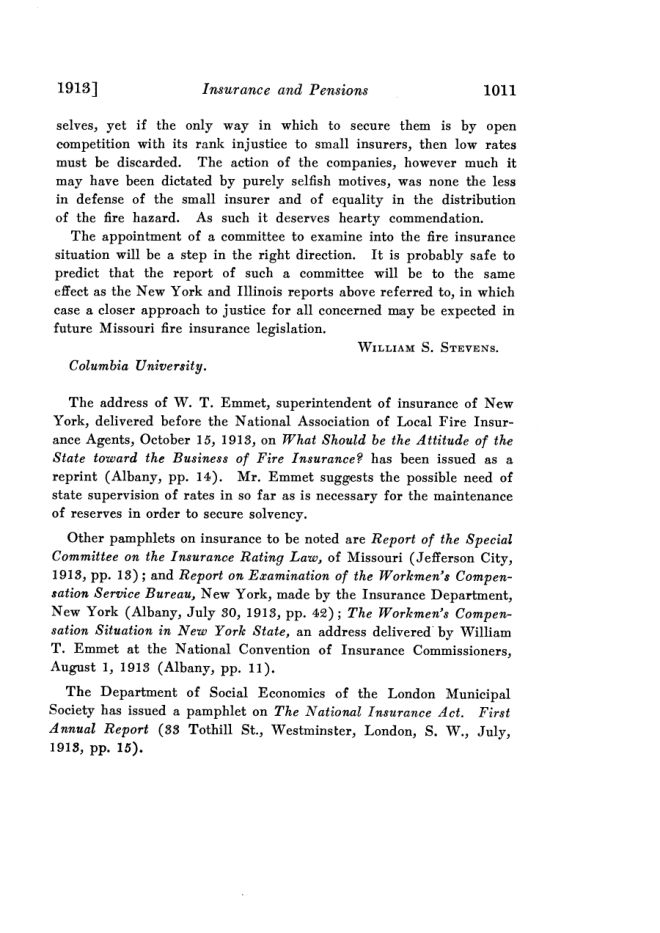

A reserva que não se vendia e as objeções ao dólar compensado
Leitura: 14 min
Hollander mostra que os títulos dos bancos não eram vendidos nas crises; Robinson mede o custo do governo pela riqueza; Patterson aponta os obstáculos práticos ao dólar compensado de Fisher.


Em 4 de junho de 1913, os 7.473 bancos nacionais dos Estados Unidos tinham US$ 1.050.970.119 aplicados em títulos que não eram do governo federal. Jacob H. Hollander, da Johns Hopkins University, abre o número de dezembro de 1913 da American Economic Review com esse dado: era o maior valor absoluto e a maior proporção dos ativos bancários de toda a história do sistema nacional, para a mesma época do ano.
A edição, último número do vol. 3, traz cinco artigos nas primeiras cem páginas, todos sobre a maneira como instituições públicas e privadas lidam com dinheiro. Depois de Hollander, Edward Van Dyke Robinson, da University of Minnesota, mede o custo do governo em Minnesota pelo valor real da propriedade. Arthur S. Field examina a nova tabela de fretes expressos fixada pela Interstate Commerce Commission. E. M. Patterson, da University of Pennsylvania, levanta objeções práticas ao dólar compensado de Irving Fisher. Alfred D. Chandler, de Brookline, Massachusetts, defende as obrigações seriais contra os fundos de amortização. Seguem resenhas, listas de livros novos, documentos oficiais, resumos de periódicos e notas, entre elas o programa da reunião anual de Minneapolis.
Os títulos dos bancos funcionam como reserva secundária?
Jacob H. Hollander (Johns Hopkins University) · “The Security Holdings of National Banks” · pp. 793–814
A explicação corrente para a carteira de títulos dos bancos nacionais era a da reserva secundária: aplicações seguras, que rendem juros e podem ser vendidas depressa quando a reserva em dinheiro ameaça se esgotar. Hollander cita autores que a sustentam, como Horace White e Victor Morawetz, e propõe testá-la com as séries que os bancos entregavam ao Comptroller of the Currency, o órgão federal que os supervisionava.
Se a teoria valesse, a proporção de títulos nos ativos seria mais ou menos estável, e os bancos venderiam títulos nas crises e no outono, quando o interior do país puxava dinheiro dos centros financeiros. Os dados mostram outra coisa. A proporção cresceu quase sem interrupção desde 1863, até que o valor aplicado ficou praticamente igual ao capital integralizado dos bancos.
Nas crises, a carteira não se mexeu. Entre 12 de setembro e 18 de outubro de 1873, os empréstimos caíram de US$ 944 milhões para US$ 882 milhões, mas os títulos subiram de US$ 23,7 milhões para US$ 25,4 milhões. No pânico de 1893 ficaram praticamente parados, e em 1907 voltaram a crescer entre agosto e dezembro. Para Hollander, o grande volume de títulos tomados emprestados pelos bancos naquelas semanas mostra a rigidez da carteira, não a sua liquidez.
“A tensão do pânico não é antecipada nem aliviada pela venda de títulos.” (“Panic strain is neither anticipated nor relieved by the liquidation of securities.”)
O ritmo das compras segue o ciclo dos negócios: os bancos compram muito na euforia, com lançamentos e sindicatos de subscrição, e na prostração que se segue ao pânico; compram pouco na depressão e na ressaca da especulação. Hollander chama isso de teoria da “armadilha de lagosta”: compra-se caro e reluta-se em vender barato. Propõe limitar por lei as aplicações e, sobretudo, criar uma reserva secundária verdadeira com o redesconto de papel comercial que a legislação monetária em discussão prometia.
Cidade grande custa mais ou menos para governar?
Edward Van Dyke Robinson (University of Minnesota) · “The Cost of Government in Minnesota” · pp. 815–830
Robinson parte de uma investigação que fez para a Minnesota Tax Commission sobre o custo de todos os níveis de governo, e de cada um de 326 municípios, no ano fiscal de 1911. A primeira questão é de medida. A despesa, diz ele, engana: a cidade que tem usinas de água e luz parece gastar muito mais, embora o que o morador paga pela água seja compra, não imposto. Contribuições de melhoria também ficam de fora, desde que não excedam o benefício ao imóvel.
A medida adotada foi a receita coercitiva local: impostos, licenças, taxas e multas. O passo seguinte foi somar à comparação por habitante uma comparação por riqueza. A comissão tinha registros de cerca de 250 mil vendas de imóveis, e com eles calculou, para cada cidade, vila e condado, a relação entre o valor lançado no cadastro e o valor real, o que permitiu estimar a riqueza efetiva de cada lugar.
O resultado central é duplo. Por habitante, o custo sobe com o tamanho da cidade: de US$ 11,27 nos municípios de 1.000 a 2.500 habitantes para US$ 16,65 em Minneapolis, St. Paul e Duluth. Por US$ 10 mil de valor real, cai: de US$ 185,85 para US$ 107,20. Entre as três maiores, a ordem se repete: US$ 104,02 em Minneapolis, US$ 110,16 em St. Paul e US$ 112,68 em Duluth. A exceção é a despesa com saúde e saneamento, que cresce com o tamanho, sinal, diz o autor, dos problemas da aglomeração.
Robinson lê nos números a lei dos custos decrescentes aplicada ao governo municipal: a cidade maior faz mais coisas pelo morador, mas a riqueza cresce, em média, cerca de duas vezes mais depressa que o custo por habitante. Pede que o Census Bureau separe as cidades de mais de um milhão de habitantes e que outros estados publiquem valores reais, e tira uma conclusão sobre a urbanização.
“Essa vantagem econômica tende constantemente a tornar a grande cidade ainda maior.” (“this economic advantage tends constantly to make the great city greater still”)
Como a Interstate Commerce Commission refez os fretes expressos?
Arthur S. Field (Washington, D. C.) · “The Express Charges Prescribed by the Interstate Commerce Commission” · pp. 831–862
Em 24 de julho de 1913, a Interstate Commerce Commission, a agência federal que regulava o transporte interestadual, concluiu o processo sobre as tarifas das companhias de expresso, as empresas que levavam pacotes nos trens de passageiros, com coleta e entrega. Field, que já tratara das queixas num artigo anterior, examina agora a tabela que entrou em vigor em 15 de outubro e refazia toda a estrutura tarifária.
A comissão considerou seis bases possíveis, do retorno sobre o investimento às tarifas de frete e de passageiros, e concluiu que nenhuma servia sozinha. Não aceitou que os contratos pelos quais as ferrovias ficavam com uma porcentagem da receita do expresso justificassem tarifas mais altas: por eles, cada acréscimo cobrado pela coleta e pela entrega teria de ser quase dobrado. A tabela final soma 20 centavos fixos por pacote, 25 centavos por 100 libras para estações, mensageiros, risco e administração, e uma parcela de transporte que cresce com a distância, em blocos de 50 milhas, e varia entre cinco zonas do país.
As companhias contestaram cada parcela. Field responde com os dados do processo: em 1909, onze companhias, com 98,9% da receita do setor, gastaram em média 20,52 centavos por volume, sem contar o pagamento às ferrovias. Com peso médio de cerca de 33 libras, a tabela concede uns 28 centavos por volume para esses custos, o que ele considera suficiente. O ponto decisivo é a receita, e aí entra o novo concorrente: a encomenda postal do governo federal.
Field conclui que as companhias talvez operem com lucro sob a nova tabela diante da encomenda postal como era então, mas provavelmente não se o serviço postal se expandir com as tarifas recém-fixadas. Aceita o argumento da comissão de que o público não deve pagar mais caro para compensar a concorrência, mas registra a ressalva de que um concorrente público deve cobrir seus custos. Como saídas, aponta um serviço intermediário entre frete e expresso e o uso dos departamentos de compras das companhias como agentes de distribuição.
“O futuro das companhias de expresso como transportadoras de pequenos pacotes parece muito sombrio.” (“it looks very gloomy for the future of the express companies as carriers of small parcels”)
O dólar compensado funcionaria na prática?
E. M. Patterson (University of Pennsylvania) · “Objections to a Compensated Dollar” · pp. 863–874
O plano de Irving Fisher propunha estabilizar o nível de preços mudando o peso de ouro do dólar conforme um número-índice: quando os preços subissem, a Casa da Moeda passaria a exigir mais ouro por dólar cunhado. Patterson deixa de lado as críticas teóricas, como a dependência da teoria quantitativa da moeda, e as políticas, já levantadas por Taussig, e examina só uma pergunta: supondo o plano correto e aprovado, ele funcionaria?
O primeiro obstáculo está nos preços em queda. O próprio Fisher admitia que a “senhoriagem”, a diferença entre o ouro depositado e o ouro do dólar cunhado, nunca poderia ser negativa; senão, derreter moedas daria lucro. Para conter uma queda seria preciso reduzir o peso do dólar abaixo dos 25,8 grãos, e Patterson mostra o que isso faria com os contratos longos: títulos que prometem “dólares” e títulos que prometem “dólares-ouro do padrão atual” passariam a valer coisas diferentes.
Como reações desse tamanho voltam a cada poucos anos, mesmo numa tendência de alta, o plano só funcionaria a partir de um nível de preços reconhecidamente baixo. Tomar como base o nível de 1908 obrigaria a exigir de saída mais de 30 grãos de ouro por dólar, com perda imediata para quem tivesse ouro não cunhado. Tomar o nível de 1913 deixaria o sistema exposto à próxima queda.
O segundo obstáculo é o câmbio. Adotado por um só país, o plano faria a paridade com a libra mudar a cada ajuste mensal ou trimestral, num comércio que dependia de créditos de três a seis meses e de uma libra que oscilava, em geral, entre US$ 4,84 e US$ 4,89. Patterson recorre à experiência dos países de padrão prata, onde o câmbio instável paralisava o comércio, e conclui que o plano carece do traço essencial do padrão de câmbio-ouro: a capacidade de manter o câmbio estável.
Fundo de amortização ou obrigações seriais?
Alfred D. Chandler (Brookline, Massachusetts) · “Amortization” · pp. 875–893
Chandler parte de um livro inglês, The Repayment of Local and Other Loans, de Edward Hartley Turner, professor de contabilidade municipal em Manchester, que defende o fundo de amortização como o melhor modo de pagar empréstimos públicos. O fundo de amortização separa todo ano uma quantia que, investida a juros compostos, deve pagar o principal no vencimento. A alternativa é a obrigação serial, em que uma parte do principal vence e é paga a cada ano.
Para Chandler, o próprio livro de Turner, com seus problemas de cálculo e 68 formulários-padrão, é uma demonstração das dificuldades do método. O fundo exige que alguém administre bem o dinheiro por décadas, e a história que ele reúne é de fundos negligenciados, desviados para despesas correntes ou mal calculados. Cita Ricardo, para quem os fundos tendem mais a estimular a despesa do que a reduzir a dívida, e a suspensão do fundo inglês em tempo de guerra.
O argumento principal é de custo. Numa obrigação de US$ 1 milhão a 4% por vinte anos, com o fundo rendendo 3,5%, a obrigação serial sai US$ 59.133,02 mais barata, mesmo depois de descontar os juros que o contribuinte ganharia com o dinheiro poupado nos primeiros anos. A diferença cresce com o prazo e o valor. Massachusetts, que permitia obrigações seriais havia décadas, acabara de proibir fundos de amortização para empréstimos municipais, depois do levantamento de C. F. Gettemy, diretor do Bureau of Statistics do estado.
Chandler responde também ao argumento de que as parcelas iniciais mais altas pesam sobre a geração atual. Os sucessores, observa, seremos em boa parte nós mesmos: quem tem entre 25 e 40 anos ainda estará pagando muitas dessas dívidas entre os 55 e os 70. Propõe que estados e municípios troquem voluntariamente, com os credores, os títulos com fundo de amortização por títulos seriais, e fecha com uma máxima: a melhor maneira de amortizar uma dívida é pagá-la.
O que mais há na edição?
As resenhas, organizadas por área, incluem Indian Currency and Finance, de John Maynard Keynes, resenhado por Harold L. Reed; The Agrarian Problem in the Sixteenth Century, de R. H. Tawney, por H. L. Gray; a oitava edição dos Essays in Taxation de E. R. A. Seligman, por Fred Rogers Fairchild; The Servile State, de Hilaire Belloc; e o livro de Maurice Halbwachs sobre Quetelet e o homem médio. Os documentos começam por boletins do Departamento de Agricultura sobre armazenagem frigorífica. As notas trazem o programa da 26ª reunião anual, em Minneapolis, de 27 a 30 de dezembro, com sessões sobre controle de serviços públicos, teoria das tarifas ferroviárias, sindicalismo e dissolução de trustes, e registram a conferência nacional de tributação de Buffalo, com 245 delegados, e a criação da Canadian Political Science Association, em Ottawa.
Na minha leitura
Na minha leitura, os cinco artigos fazem a mesma operação: testam uma regra aceita contra os números que as próprias instituições produziam. Hollander confronta a teoria da reserva secundária com quarenta anos de balanços; Robinson troca a despesa por habitante pela receita coercitiva medida contra a riqueza real; Chandler mostra que o fundo de amortização, correto no papel, depende de uma administração que a experiência raramente oferece. Patterson aplica o mesmo critério a uma proposta ainda não testada e pergunta pelos detalhes de operação antes da teoria.
O fio comum é a distância entre o desenho de uma instituição e o seu funcionamento. Um ativo é líquido só se alguém o vende quando é preciso; uma tarifa regulada só se sustenta se considerar a concorrência que o próprio governo cria; uma regra monetária só estabiliza se não desorganizar os contratos e o câmbio. São perguntas de engenharia institucional, e os autores as respondem com séries, tabelas e casos concretos.
Glossário
- Bancos nacionais
- bancos com licença federal, criados a partir de 1863 e supervisionados pelo Comptroller of the Currency.
- Reserva secundária
- aplicações rentáveis e fáceis de vender que complementariam o dinheiro em caixa de um banco.
- Valor real (true valuation)
- estimativa do valor de mercado da propriedade, obtida corrigindo o valor lançado no cadastro com dados de vendas.
- Receita coercitiva
- impostos, licenças, taxas e multas, pagos por obrigação, e não em troca de um bem vendido.
- Companhia de expresso
- empresa que transportava pacotes e valores nos trens de passageiros, com coleta e entrega.
- Encomenda postal (parcel post)
- serviço federal de transporte de pacotes pelo correio.
- Dólar compensado
- plano de Irving Fisher de variar o peso de ouro do dólar conforme um índice de preços.
- Fundo de amortização (sinking fund)
- reserva formada com aportes anuais investidos a juros compostos para pagar o principal de uma dívida no vencimento.
- Obrigação serial (serial bond)
- empréstimo dividido em parcelas que vencem e são pagas ano a ano.
Artigos (5)
- The Security Holdings of National Banks — Jacob H. Hollander (Johns Hopkins University) (pp. 793–814) · resenha acima · comentário completo · JSTOR
- The Cost of Government in Minnesota — Edward Van Dyke Robinson (University of Minnesota) (pp. 815–830) · resenha acima · JSTOR
- The Express Charges Prescribed by the Interstate Commerce Commission — Arthur S. Field (Washington, D. C.) (pp. 831–862) · resenha acima · JSTOR
- Objections to a Compensated Dollar — E. M. Patterson (University of Pennsylvania) (pp. 863–874) · resenha acima · comentário completo · JSTOR
- Amortization — Alfred D. Chandler (Brookline, Massachusetts) (pp. 875–893) · resenha acima · JSTOR
Resenhas (28)
- T. H. Penson, The Economics of Everyday Life; Henry Reed Burch e Scott Nearing, Elements of Economics; S. J. Chapman, Political Economy — Herbert E. Mills (pp. 894–896). Três manuais introdutórios de economia, resenhados em conjunto. JSTOR
- B. Samsonoff, Esquisse d’une Théorie Générale de la Rente — Esther Lowenthal (pp. 897–898). Monografia sobre a renda, com uma parte histórica sobre as teorias anteriores. JSTOR
- Eugen Fridrichowicz, Grundriss einer Geschichte der Volkswirtschaftslehre — Lewis H. Haney (pp. 898–899). Compêndio alemão de história do pensamento econômico, que classifica as escolas em mercantilista, racionalista, sociológica e histórica. JSTOR
- Clarence P. Gould, The Land System in Maryland, 1720–1765 — Amelia C. Ford (pp. 902–904). Estudo da série da Johns Hopkins sobre o regime de terras de Maryland no século XVIII. JSTOR
- R. H. Tawney, The Agrarian Problem in the Sixteenth Century — H. L. Gray (pp. 904–907). Estudo sobre as mudanças agrárias inglesas do século XVI. JSTOR
- Carl W. Thompson e G. P. Warber, Social and Economic Survey of a Rural Township in Southern Minnesota — A. P. Winston (pp. 910–912). Levantamento social e econômico de um município rural do sul de Minnesota, publicado pela University of Minnesota. JSTOR
- William C. Van Antwerp, The Stock Exchange from Within; Harrison H. Brace, The Value of Organized Speculation; e outros livros sobre bolsas — H. C. Emery (pp. 917–921). Resenha conjunta de cinco livros sobre bolsas de valores e especulação. JSTOR
- Handbook of Municipal Accounting (Metz Fund Handbooks of City Business Methods) — William Morse Cole (pp. 922–924). Manual de contabilidade municipal preparado sob a direção de William H. Allen, Henry Bruere e Frederick A. Cleveland. JSTOR
- Joseph J. Klein, Elements of Accounting, Theory and Practice — W. T. Jackman (pp. 924–926). Manual de contabilidade, teoria e prática. JSTOR
- Samuel S. Wyer, Regulation, Valuation and Depreciation of Public Utilities; Horatio A. Foster, Engineering Valuation of Public Utilities and Factories — John Bauer (pp. 926–928). Dois livros sobre avaliação e depreciação de empresas de serviços públicos. JSTOR
- Arthur H. Woolf, A Short History of Accountants and Accountancy — William H. Price (pp. 928–930). História da profissão contábil, com bibliografia preparada pelo bibliotecário do Institute of Chartered Accountants in England and Wales. JSTOR
- John Graham Brooks, American Syndicalism: The I. W. W. — R. F. Hoxie (pp. 932–934). Estudo sobre o sindicalismo revolucionário americano e os Industrial Workers of the World. JSTOR
- James Boyle, The Minimum Wage and Syndicalism — Louis Levine (pp. 934–935). Livro sobre o salário mínimo e o sindicalismo. JSTOR
- E. H. Downey, History of Work Accident Indemnity in Iowa — Raymond V. Phelan (pp. 935–937). História da indenização de acidentes de trabalho em Iowa, da Iowa Economic History Series. JSTOR
- Hartley Withers, Money-Changing: An Introduction to Foreign Exchange — A. C. Whitaker (pp. 940–941). Introdução popular ao câmbio estrangeiro. JSTOR
- John Maynard Keynes, Indian Currency and Finance — Harold L. Reed (pp. 941–943). Livro sobre o sistema monetário e as finanças da Índia. JSTOR
- Charles N. Fowler, Seventeen Talks on the Banking Question — Fred Rogers Fairchild (pp. 944–945). Livro do deputado Fowler sobre a reforma bancária, em forma de conversas entre o Tio Sam e seis cidadãos. JSTOR
- Marco Fanno, Le Banche e il Mercato Monetario — Donald F. Grass (pp. 945–946). Estudo italiano sobre os bancos e o mercado monetário. JSTOR
- Edwin R. A. Seligman, Essays in Taxation (8ª edição) — Fred Rogers Fairchild (pp. 949–952). Oitava edição, revista e ampliada, dos ensaios de Seligman sobre tributação. JSTOR
- Henry Pratt Fairchild, Immigration: A World Movement and Its American Significance — Prescott F. Hall (pp. 955–956). Estudo geral sobre a imigração e seus efeitos nos Estados Unidos. JSTOR
- Luigi Villari, Gli Stati Uniti d’America e l’Emigrazione Italiana — Robert F. Foerster (pp. 956–958). Livro sobre a emigração italiana para os Estados Unidos. JSTOR
- Paul Leroy-Beaulieu, La Question de la Population — Ulysses G. Weatherly (pp. 958–959). Livro sobre a questão demográfica, com ênfase na França. JSTOR
- Corrado Gini, I Fattori Demografici dell’Evoluzione delle Nazioni; The Contributions of Demography to Eugenics — Kate Holladay Claghorn (pp. 959–961). Dois trabalhos do estatístico italiano sobre fatores demográficos. JSTOR
- Lindstedt e Marcus, Folk-pensioneringen — Katharine Coman (pp. 965–967). Obra sueca sobre o sistema nacional de pensões. JSTOR
- G. Harold Powell, Coöperation in Agriculture — Ira B. Cross (pp. 968–969). Livro sobre cooperativas agrícolas. JSTOR
- Hilaire Belloc, The Servile State; J. E. F. Mann, N. J. Sievers e R. W. T. Cox, The Real Democracy — Duncan A. MacGibbon (pp. 969–971). Dois livros do mesmo grupo de autores, com crítica ao sistema industrial moderno e às reformas em curso. JSTOR
- M. Tugan-Baranowsky, L’Évolution Historique du Socialisme Moderne — B. H. Hibbard (pp. 971–972). Tradução francesa da história do socialismo moderno de Tugan-Baranowsky. JSTOR
- Maurice Halbwachs, La Théorie de l’Homme Moyen: Essai sur Quetelet et la Statistique Morale — F. H. Hankins (pp. 973–975). Ensaio sobre Quetelet, o homem médio e a estatística moral. JSTOR
Novos livros (17)
- New Books (pp. 899–902). Lista de livros novos: obras gerais, teoria e sua história. JSTOR
- New Books (pp. 907–910). Lista de livros novos: história e geografia econômica. JSTOR
- New Books (pp. 912–913). Lista de livros novos: agricultura, mineração, silvicultura e pesca. JSTOR
- New Books (pp. 913–914). Lista de livros novos: indústrias manufatureiras. JSTOR
- New Books (pp. 914–916). Lista de livros novos: transporte e comunicações. JSTOR
- New Books (pp. 916–917). Lista de livros novos: comércio e crises comerciais. JSTOR
- New Books (pp. 930–931). Lista de livros novos: contabilidade, métodos de negócios, investimentos e bolsas. JSTOR
- New Books (pp. 931–932). Lista de livros novos: capital e organização capitalista. JSTOR
- New Books (pp. 937–940). Lista de livros novos: trabalho e organizações de trabalhadores. JSTOR
- New Books (pp. 947–949). Lista de livros novos: moeda, preços, crédito e bancos. JSTOR
- New Books (pp. 952–954). Lista de livros novos: finanças públicas, tributação e tarifa. JSTOR
- New Books (pp. 961–962). Lista de livros novos: população e migração. JSTOR
- New Books (pp. 962–965). Lista de livros novos: problemas sociais e reformas. JSTOR
- New Books (pp. 967–968). Lista de livros novos: seguros e pensões. JSTOR
- New Books (pp. 968). Lista de livros novos: pauperismo e assistência. JSTOR
- New Books (pp. 972–973). Lista de livros novos: socialismo e cooperativas. JSTOR
- New Books (pp. 976). Lista de livros novos: estatística e seus métodos. JSTOR
Documentos, periódicos e notas (3)
- Documents, Reports, and Legislation (pp. 977–1010). Resumos de documentos oficiais, a começar por boletins do Departamento de Agricultura sobre armazenagem frigorífica. JSTOR
- Periodicals (pp. 1011–1060). Resumos de artigos de periódicos, por área. JSTOR
- Notes (pp. 1061–1078). Programa da 26ª reunião anual, em Minneapolis, conferência nacional de tributação de Buffalo, criação da Canadian Political Science Association e outras notas. JSTOR
Fontes
- The Security Holdings of National Banks (pp. 793–814). JSTOR · Internet Archive (PDF)
- The Cost of Government in Minnesota (pp. 815–830). JSTOR · Internet Archive (PDF)
- The Express Charges Prescribed by the Interstate Commerce Commission (pp. 831–862). JSTOR · Internet Archive (PDF)
- Objections to a Compensated Dollar (pp. 863–874). JSTOR · Internet Archive (PDF)
- Amortization (pp. 875–893). JSTOR · Internet Archive (PDF)
- [untitled] The American Economic Review, (1913-12-01), pages 894-896 (pp. 894–896). JSTOR · Internet Archive (PDF)
- [untitled] The American Economic Review, (1913-12-01), pages 897-898 (pp. 897–898). JSTOR · Internet Archive (PDF)
- [untitled] The American Economic Review, (1913-12-01), pages 898-899 (pp. 898–899). JSTOR · Internet Archive (PDF)
- New Books (pp. 899–902). JSTOR · Internet Archive (PDF)
- [untitled] The American Economic Review, (1913-12-01), pages 902-904 (pp. 902–904). JSTOR · Internet Archive (PDF)
- [untitled] The American Economic Review, (1913-12-01), pages 904-907 (pp. 904–907). JSTOR · Internet Archive (PDF)
- New Books (pp. 907–910). JSTOR · Internet Archive (PDF)
- [untitled] The American Economic Review, (1913-12-01), pages 910-912 (pp. 910–912). JSTOR · Internet Archive (PDF)
- New Books (pp. 912–913). JSTOR · Internet Archive (PDF)
- New Books (pp. 913–914). JSTOR · Internet Archive (PDF)
- New Books (pp. 914–916). JSTOR · Internet Archive (PDF)
- New Books (pp. 916–917). JSTOR · Internet Archive (PDF)
- [untitled] The American Economic Review, (1913-12-01), pages 917-921 (pp. 917–921). JSTOR · Internet Archive (PDF)
- [untitled] The American Economic Review, (1913-12-01), pages 922-924 (pp. 922–924). JSTOR · Internet Archive (PDF)
- [untitled] The American Economic Review, (1913-12-01), pages 924-926 (pp. 924–926). JSTOR · Internet Archive (PDF)
- [untitled] The American Economic Review, (1913-12-01), pages 926-928 (pp. 926–928). JSTOR · Internet Archive (PDF)
- [untitled] The American Economic Review, (1913-12-01), pages 928-930 (pp. 928–930). JSTOR · Internet Archive (PDF)
- New Books (pp. 930–931). JSTOR · Internet Archive (PDF)
- New Books (pp. 931–932). JSTOR · Internet Archive (PDF)
- [untitled] The American Economic Review, (1913-12-01), pages 932-934 (pp. 932–934). JSTOR · Internet Archive (PDF)
- [untitled] The American Economic Review, (1913-12-01), pages 934-935 (pp. 934–935). JSTOR · Internet Archive (PDF)
- [untitled] The American Economic Review, (1913-12-01), pages 935-937 (pp. 935–937). JSTOR · Internet Archive (PDF)
- New Books (pp. 937–940). JSTOR · Internet Archive (PDF)
- [untitled] The American Economic Review, (1913-12-01), pages 940-941 (pp. 940–941). JSTOR · Internet Archive (PDF)
- [untitled] The American Economic Review, (1913-12-01), pages 941-943 (pp. 941–943). JSTOR · Internet Archive (PDF)
- [untitled] The American Economic Review, (1913-12-01), pages 944-945 (pp. 944–945). JSTOR · Internet Archive (PDF)
- [untitled] The American Economic Review, (1913-12-01), pages 945-946 (pp. 945–946). JSTOR · Internet Archive (PDF)
- New Books (pp. 947–949). JSTOR · Internet Archive (PDF)
- [untitled] The American Economic Review, (1913-12-01), pages 949-952 (pp. 949–952). JSTOR · Internet Archive (PDF)
- New Books (pp. 952–954). JSTOR · Internet Archive (PDF)
- [untitled] The American Economic Review, (1913-12-01), pages 955-956 (pp. 955–956). JSTOR · Internet Archive (PDF)
- [untitled] The American Economic Review, (1913-12-01), pages 956-958 (pp. 956–958). JSTOR · Internet Archive (PDF)
- [untitled] The American Economic Review, (1913-12-01), pages 958-959 (pp. 958–959). JSTOR · Internet Archive (PDF)
- [untitled] The American Economic Review, (1913-12-01), pages 959-961 (pp. 959–961). JSTOR · Internet Archive (PDF)
- New Books (pp. 961–962). JSTOR · Internet Archive (PDF)
- New Books (pp. 962–965). JSTOR · Internet Archive (PDF)
- [untitled] The American Economic Review, (1913-12-01), pages 965-967 (pp. 965–967). JSTOR · Internet Archive (PDF)
- New Books (pp. 967–968). JSTOR · Internet Archive (PDF)
- New Books (pp. 968). JSTOR · Internet Archive (PDF)
- [untitled] The American Economic Review, (1913-12-01), pages 968-969 (pp. 968–969). JSTOR · Internet Archive (PDF)
- [untitled] The American Economic Review, (1913-12-01), pages 969-971 (pp. 969–971). JSTOR · Internet Archive (PDF)
- [untitled] The American Economic Review, (1913-12-01), pages 971-972 (pp. 971–972). JSTOR · Internet Archive (PDF)
- New Books (pp. 972–973). JSTOR · Internet Archive (PDF)
- [untitled] The American Economic Review, (1913-12-01), pages 973-975 (pp. 973–975). JSTOR · Internet Archive (PDF)
- New Books (pp. 976). JSTOR · Internet Archive (PDF)
- Documents, Reports, and Legislation (pp. 977–1010). JSTOR · Internet Archive (PDF)
- Periodicals (pp. 1011–1060). JSTOR · Internet Archive (PDF)
- Notes (pp. 1061–1078). JSTOR · Internet Archive (PDF)
- Sumário da edição no JSTOR: The American Economic Review, vol. 3, nº 4.
Documento em domínio público (EUA, publicado antes de 1931), via JSTOR Early Journal Content e Internet Archive. Resumo e comentário do autor deste site, sem afiliação com a American Economic Association. Encontrou um erro? Escreva: a correção é publicada no próprio texto, com data.
← Nº 126 · Manual de 1913: anuidade de cinco dólares e uma lista de 56 páginas Nº 128 · Março de 1914: o Federal Reserve, o imposto de renda e os juros →